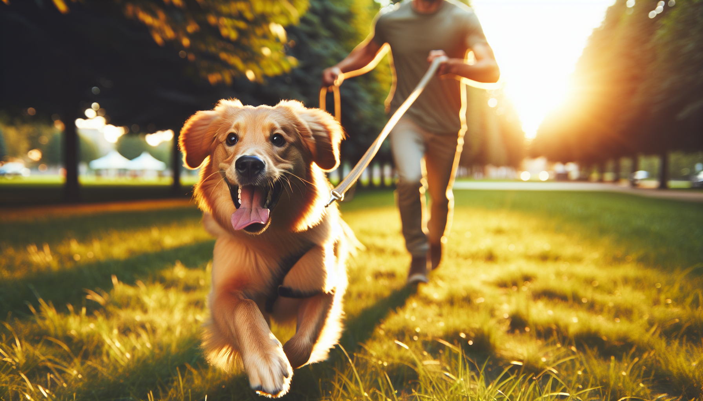

A reliable recall, or teaching your dog to come when called, is one of the most important life skills your dog can learn. It is not just a neat trick. It is a safety behavior that can help prevent accidents, stop your dog from running toward danger, and give you more freedom to enjoy walks, hikes, and off-leash time responsibly.
If you are a new puppy parent, living with a recently adopted rescue, or trying to improve recall with an adult dog, the good news is this: recall can absolutely be taught. The key is understanding that dogs do not come when called because they are stubborn or trying to “win.” They come when the behavior has been built carefully, reinforced consistently, and practiced in a way that makes returning to you the best choice in the moment.
In this guide, you will learn exactly how to teach your dog to come when called using positive reinforcement, smart management, and realistic training steps that work in everyday life.
When dog trainers talk about essential behaviors, recall is always near the top of the list. A strong “come” cue can help you call your dog away from traffic, wildlife, other dogs, dropped food, or unfamiliar people. It also builds trust and communication between you and your dog.
For puppies, recall training lays the foundation for future freedom. For rescue dogs, it helps create security and predictability in a new environment. For adult dogs, it can improve responsiveness and make outings less stressful.
Reliable recall is not about yelling louder or repeating your cue over and over. It is about teaching your dog that coming to you is safe, rewarding, and worth interrupting whatever else they are doing.
One of the biggest mistakes owners make is expecting “every time” reliability too soon. Dogs are not robots. Even well-trained dogs can struggle if the environment is too distracting or if the behavior has not been practiced enough under real-life conditions.
Think of recall as a skill that develops in layers:
This process is called generalization. Dogs do not automatically understand that “come” in your kitchen means the same thing at the park, on a trail, or when a squirrel appears. You have to teach each step gradually.
It is also important to choose a cue and protect it. You can use “come,” “here,” or another word you like. Once you pick one, use it consistently. Avoid saying it repeatedly if you know your dog is unlikely to respond, because ignored cues become weaker over time.
The best place to begin is in a quiet, low-distraction area like your living room or hallway. Bring high-value rewards such as small pieces of chicken, cheese, or another treat your dog loves. For many dogs, especially rescues and independent breeds, ordinary kibble is not exciting enough for recall training.
Start simple. Say your dog’s name once in a cheerful tone. When they look at you, say your recall cue, take a few steps backward, and reward them the moment they reach you. Then praise warmly. Movement often encourages dogs to follow, so backing up can make you more engaging.
Keep sessions short and fun. Practice just a few repetitions at a time. End before your dog loses interest.
Here is a simple beginner recall routine:
The release matters. If coming to you always means the fun ends, your dog may hesitate next time. Sometimes call your dog, reward them, and then let them go back to playing or exploring. This teaches that coming to you does not always mean the party is over.
To teach your dog to come when called every time, you need to become more rewarding than the environment, especially in the early stages. That does not mean you will always need treats forever, but it does mean you should pay generously while building the behavior.
Science-backed positive reinforcement works because behaviors that are rewarded are more likely to be repeated. If your dog comes to you and receives something wonderful, they are more likely to respond again.
Great recall rewards can include:
Many trainers use a “jackpot” for especially great recalls, such as when your dog chooses you over a distraction. A jackpot might be several treats in a row, a mini play session, or extra happy praise. This helps your dog learn that choosing you is always worth it.
Just as important, never punish your dog for coming to you. If your dog finally returns after ignoring you, do not scold, grab angrily, or immediately do something unpleasant like nail trimming. If coming to you predicts bad outcomes, recall will weaken quickly.
Once your dog responds well indoors, it is time to gradually increase difficulty. This is where many owners move too fast. Instead of going straight to an open park and hoping for the best, add one challenge at a time: distance, distraction, or duration.
A long training line is one of the best tools for recall practice. Use a lightweight long line, often 15 to 30 feet, in a safe open area. This gives your dog freedom while preventing them from rehearsing running off.
Practice in stages:
Call your dog when they are likely to succeed. Reward heavily for fast responses. If they seem too distracted, the environment is too hard right now. Move farther away from the distraction, use a better reward, or return to an easier setting.
The long line is not for yanking your dog back to you. It is for safety and management. You can gently prevent your dog from self-rewarding by running off, but the goal is still to have them choose to come.
If your dog is inconsistent, you may not need a new method. You may just need to stop a few common habits that accidentally undermine training.
Another common issue is poisoning the cue. This happens when “come” has been used so often without success that it loses meaning. If that has happened, it can help to introduce a fresh cue and rebuild it carefully with excellent rewards and easy practice setups.
Puppies often learn recall quickly because they naturally want to stay close, but they also have short attention spans. Keep training playful and brief. Use games like ping-pong recall between family members, where each person takes turns calling and rewarding the puppy.
Rescue dogs may need extra time to build trust. If your newly adopted dog seems shut down, anxious, or overstimulated, focus first on creating safety and routine. Recall training should feel predictable and rewarding, never pressured. Use a long line outdoors and avoid off-leash risks until your relationship is strong and your dog has a reliable response history.
For highly distracted dogs, remember that sniffing, chasing, and exploring are naturally rewarding. You are not fighting disobedience; you are competing with biology. Increase reward value, practice farther from distractions, and reinforce heavily when your dog makes the right choice.
An emergency recall can also be useful. This is a special cue reserved for urgent situations and paired with the best rewards your dog ever gets. Use it sparingly so it stays powerful.
Once your dog understands recall well, do not stop reinforcing it. Like any skill, it stays sharp with practice. Continue to reward good recalls regularly, especially in real-world situations.
Make recall part of everyday life:
Reliability comes from hundreds of successful repetitions over time. The more often your dog experiences that coming to you is rewarding, safe, and worthwhile, the stronger the behavior becomes.
If your dog regresses, do not panic. Go back a step, reduce distractions, and rebuild. Training is not linear, especially during adolescence, after life changes, or when working with a dog who is still settling in.
Teaching your dog to come when called every time is less about demanding perfect obedience and more about building a behavior your dog truly wants to perform. With positive reinforcement, smart progression, and consistent practice, recall can become one of your dog’s strongest and most valuable skills.
Start in easy environments. Reward generously. Use a long line for safety. Avoid punishing your dog for returning. And remember that every successful repetition strengthens the habit you want.
Whether you are raising a puppy, helping a rescue settle in, or improving recall with an adult dog, patient, science-backed training can make a huge difference. A reliable recall gives your dog more freedom and gives you more peace of mind.
Get our full Dog Training eBook series — new titles added weekly.